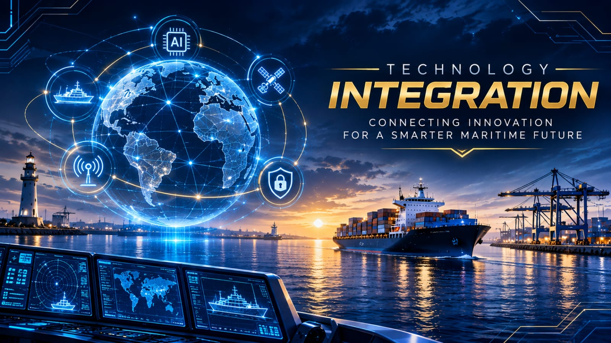
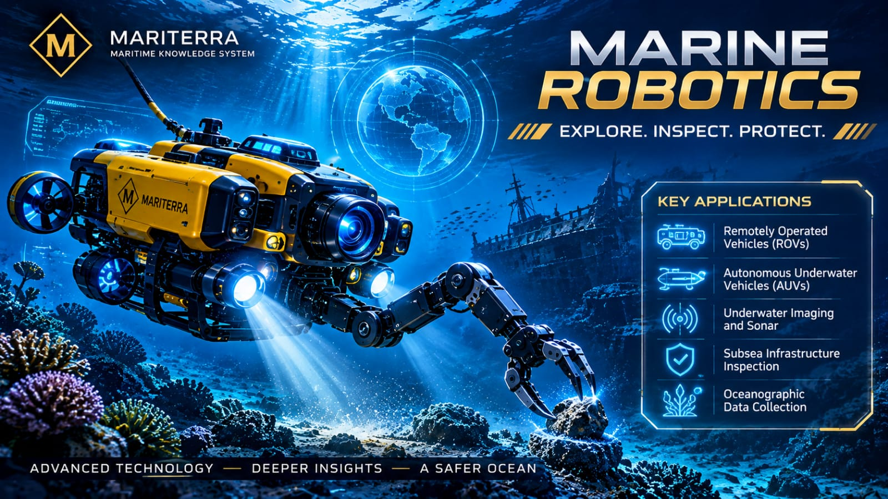
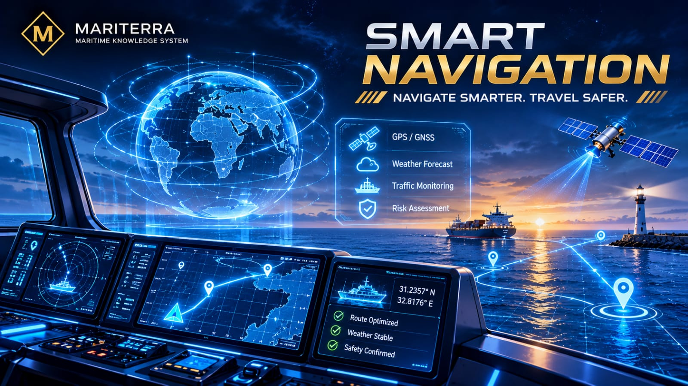
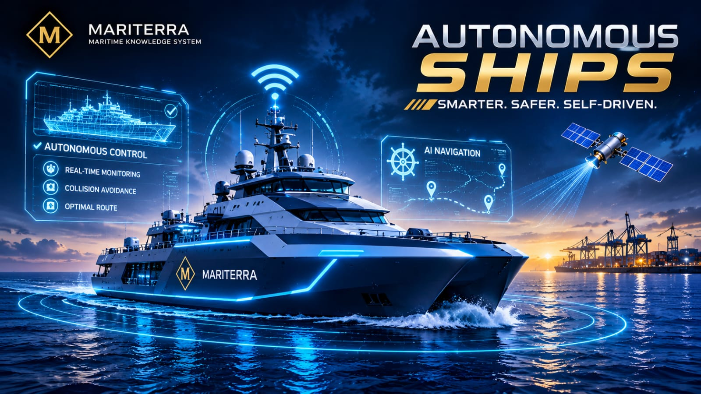
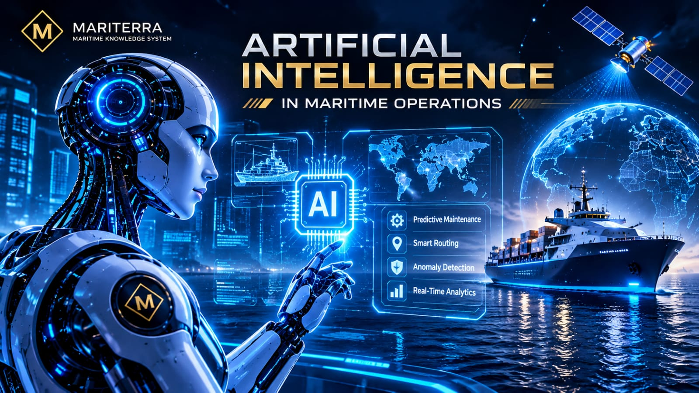

Engineering the Future of the Oceans
Maritime technology connects engineering, digital intelligence, automation, and scientific innovation to make maritime operations smarter, safer, and more efficient.
Explore Technologies ↓Discover the technologies transforming the maritime industry. Explore intelligent systems, advanced robotics, autonomous vessels, and artificial intelligence shaping the future of the oceans.

Maritime technology connects engineering, digital intelligence, automation, and scientific innovation to make maritime operations smarter, safer, and more efficient.
Explore Technologies ↓Each field introduces a different part of maritime innovation. Select a topic to explore its scientific foundations, practical applications, challenges, and future developments.

01Explore how different digital systems, communication technologies, sensors, and automated solutions work together across modern maritime operations.

02Discover underwater robotic systems, remotely operated vehicles, autonomous underwater vehicles, and their role in exploration and marine research.

03Learn how satellite positioning, electronic charts, navigation sensors, and intelligent systems support safer and more accurate maritime navigation.

04Explore vessels that use sensors, automation, communication networks, and intelligent control systems to perform maritime operations.

05Understand how machine learning, predictive analytics, computer vision, and intelligent algorithms are used to support maritime decision-making.
From underwater exploration to intelligent navigation, modern maritime technologies are changing how people understand, operate, and protect the oceans. Explore each field to discover the science and engineering behind these developments.